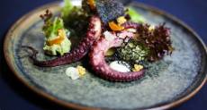

Bài Viết Nổi Bật

Nghệ Thuật Plating Trong Fine Dining
Khám phá cách các đầu bếp hàng đầu biến món ăn thành tác phẩm nghệ thuật, từ bố cục đến màu sắc.
Đọc thêmCác Bài Viết Khác
Bí Quyết Chọn Nguyên Liệu Cao Cấp
Từ Wagyu Nhật Bản đến truffle Ý, cách chọn nguyên liệu hoàn hảo.
Xu Hướng Ẩm Thực 2025
Những phong cách ẩm thực mới đang định hình Fine Dining.
Hành Trình Của Một Đầu Bếp Michelin
Câu chuyện truyền cảm hứng phía sau các ngôi sao Michelin.